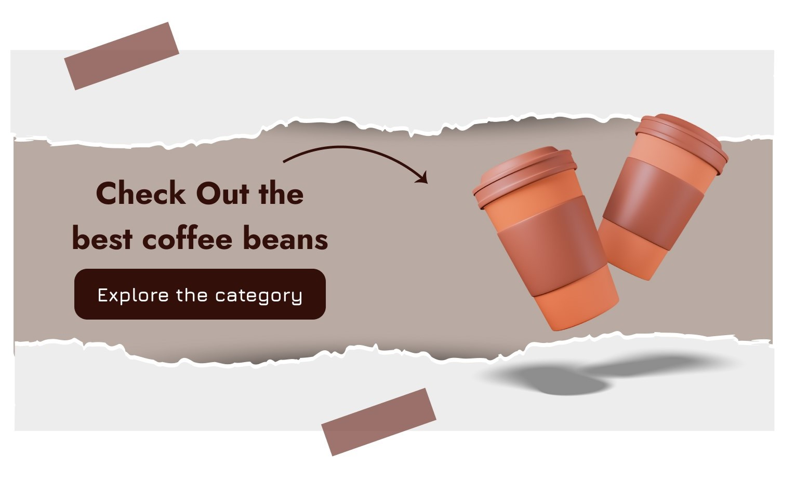
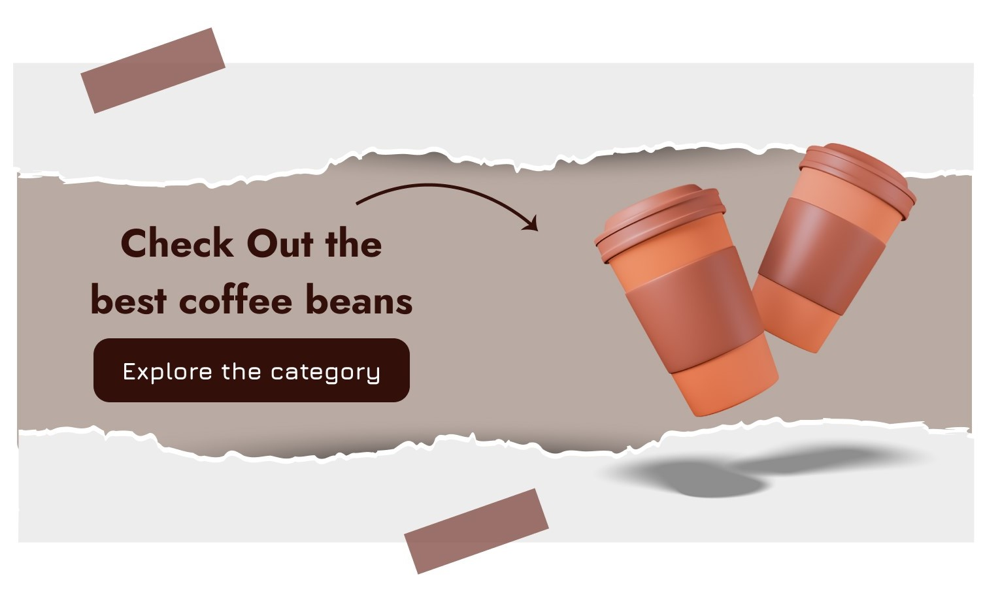

.
 


The café website features several key sections, including a homepage with an eye-catching hero image, a detailed menu page, an about us section, a blog for sharing news and updates, and a contact page with an integrated map and contact form. The menu page is interactive, allowing users to filter items by category and view detailed descriptions and prices. The blog section helps in engaging with the community by sharing stories, coffee-making tips, and upcoming events. Additionally, the website includes a photo gallery showcasing the café's interior and popular menu items, providing visitors with a glimpse of the café experience.

To ensure the website accurately represented the café's cozy and welcoming atmosphere, a warm color palette was chosen, complemented by high-quality images of the café and its offerings. Typography was carefully selected to match the café's branding, using fonts that are both stylish and readable. Animations and hover effects were incorporated to enhance interactivity without overwhelming the user. Special attention was given to the website's accessibility, ensuring it was navigable for all users, including those with disabilities. The final design successfully combined aesthetic appeal with functional efficiency, resulting in a website that effectively promotes the café and its unique offerings.